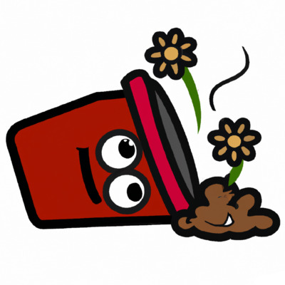
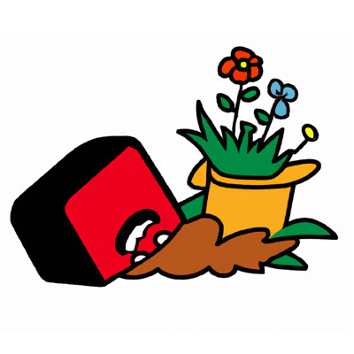
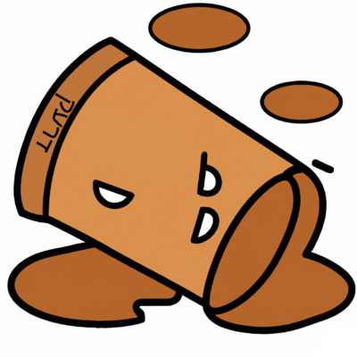
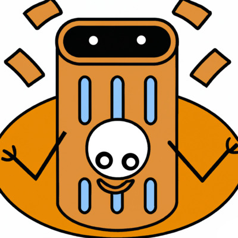

Lee Tusman
↩ Everyday
<
>
Title: Dirt ("drek") emoji
Year: 2023
Medium: ML-assisted digital drawing
Description:
A proposed series of potential emojis for the Dirt Emoji Open Call for Dirty Time, a project of Hey There Kapplow and Walker Tufts.
Even though dirt is where our food comes from, is where our bodies get buried when we die, and is literally everywhere we go, it is not represented yet in the emoji universe! Somehow we have emojis for unicorns, pufferfish, poodles and Santa Claus, but not dirt! Dirty Time is planning to try to correct this oversight and will be submitting a proposal for a dirt emoji to the Unicode foundation in 2024. But we need your dirty ideas!--Dirty Time
When I think of "dirt," I think of my grandmother's twinned use of the word as a translation of the yiddish term "drek," a vulgar phrase, along the lines of "shit" but also "trash, junk, garbage, cheap, or worthless." In my grandmother's apartment, each night she would ask us to take out the trash, which she called "taking out the dirt" in English, and sometimes in yiddish. The possible meaning shifted between my understanding of dirt in english to its more charged yiddish ideas of excrement, and back again. I sought to capture this yiddish combo of the normal, everyday "dirt" along with its possible grossness, through little visual and language-based alterations. Version 3 contains the yiddish word on the bottom of the bin.
These emoji prototypes I created "in collaboration" with the ML model Dalle2 prompt to iteratively render a number of basic shapes and collages, then brought them into Krita open source paint tool to alter, edit and expand them.




 ©opyleft
©opyleft